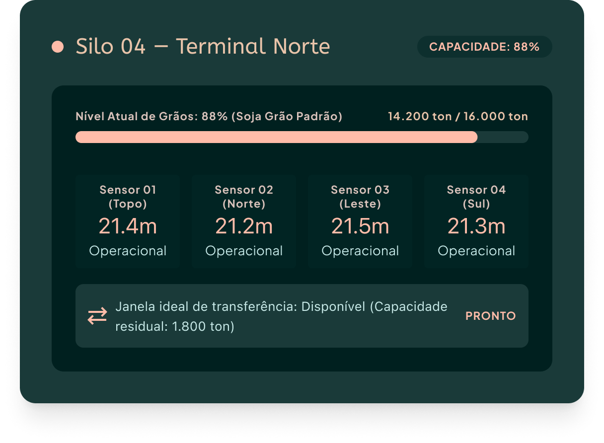

Acessar plataforma
Acessar plataforma
Monitoramento inteligente
Acompanhe o nível dos seus silos em tempo real com sensores IoT e precisão total.

Monitore a capacidade dos seus silos em tempo real e transforme dados em decisões mais inteligentes para sua operação.

A GrainTech conecta sensores IoT aos seus silos para transformar dados de capacidade em informações estratégicas, ajudando você a antecipar problemas e tomar decisões ágeis.
Acompanhe o nível dos seus silos em tempo real com sensores IoT e precisão total.
Painel completo com ocupação, enchimento e capacidade residual num só lugar.
Antecipe decisões com dados históricos para otimizar a logística e evitar gargalos ou transbordos.
CAPTAÇÃO IOT
REDE SEM FIO
PROCESSAMENTO
INTERFACE TEMPO REAL

AÇÃO PREVENTIVA
Nossos sensores ultrassônicos mapeiam continuamente o volume e nível de grãos por silo, permitindo antecipar decisões de recebimento, movimentação e expedição com total segurança.
Mapeamento preciso da superfície e altura da massa de grãos.
Calcula a capacidade restante e o tempo para o enchimento do silo.

Pronto para modernizar seu complexo?
Conheça a GrainTech e veja como o monitoramento inteligente pode fazer parte da sua operação.
Conheça o serviço